新宿駅から徒歩6分、エイチクリニック新宿では、近年感染者が急増している梅毒の検査・治療を行っています。梅毒は病期によって幅広い症状が現れ、症状が一時的に消えても体内に菌が残るため、自己判断が難しい病気です。当院は即日検査に対応し、匿名・完全個室・呼び出し番号制で、深夜23時30分まで・土日祝も受診できます。「手のひらや体に発疹が出た」「心当たりがある」という方は、新宿で深夜まで対応する当院にご相談ください。
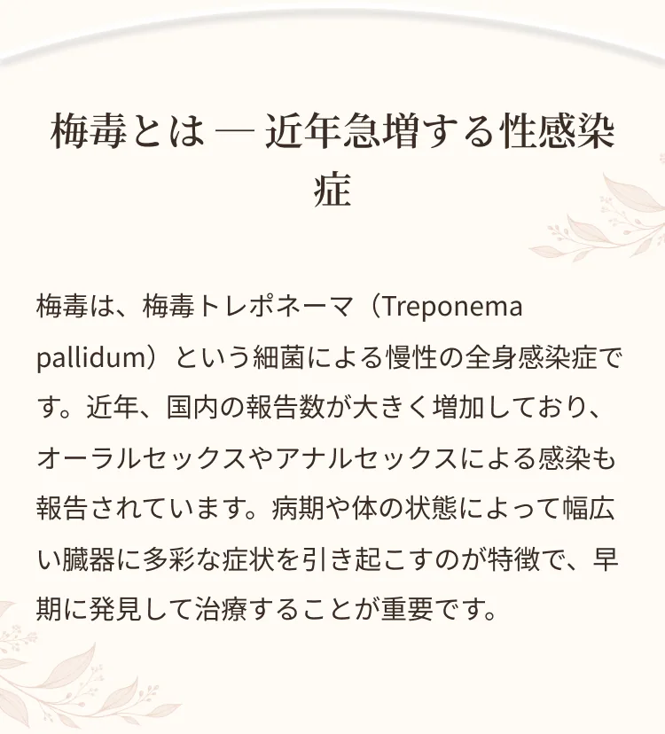
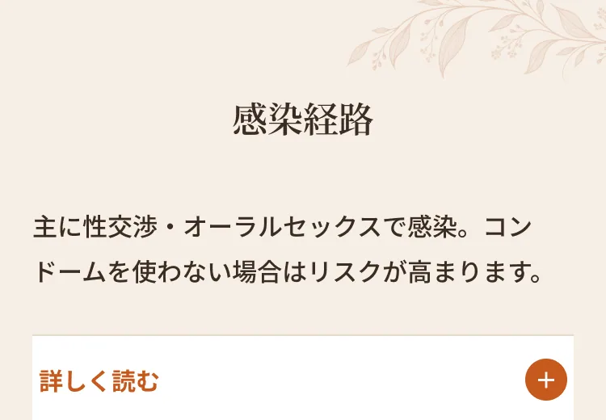
主な感染経路は性交渉・オーラルセックスです。まれに、皮膚の傷や粘膜への接触などで感染することもあります。複数のパートナーがいる、コンドームを使用しない（性交時だけでなくオーラルセックス時も）などはリスクを高めます。
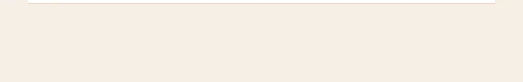
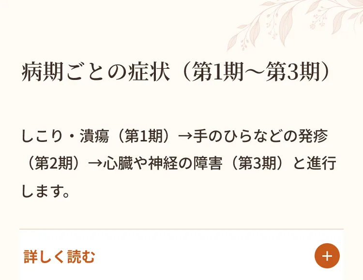
梅毒は時間の経過とともに進行します。第1期（感染後約3週間）は、感染部位（性器・口・肛門など）に無痛性の硬いしこり・潰瘍（硬性下疳）ができ、自然に消えることがあります。第2期（数週間〜数か月後）は、全身に発疹が出て、特に手のひらや足の裏に赤い斑点が現れるのが特徴で、発熱・喉の痛み・倦怠感・リンパ節の腫れを伴うこともあります。これらも自然に消えることがありますが、治療しなければ潜伏期を経て第3期（晩期）へ進み、心臓・血管・脳・神経に深刻な障害を引き起こすことがあります。症状が消えても治ったわけではない点に注意が必要です。
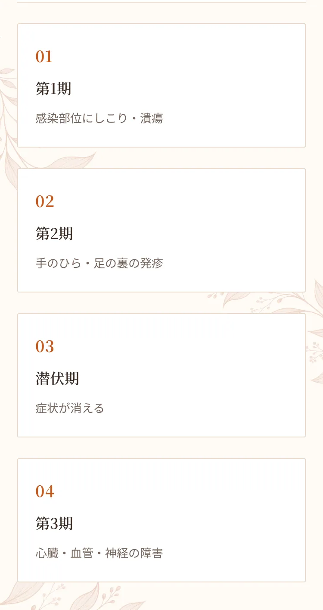
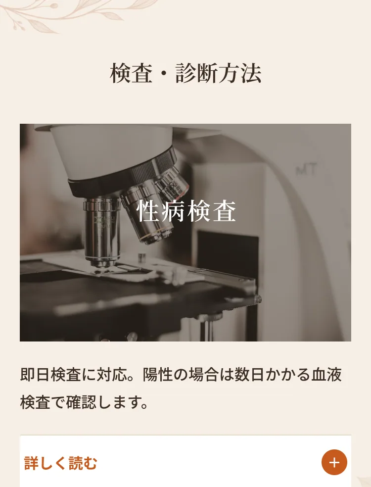
当院では梅毒の即日検査に対応しています。即日検査で陽性が出た場合は、数日かかる血液検査で確認します。梅毒の検査には、過去の感染も反映する検査と、現在の活動性を反映する検査があり、これらを組み合わせて診断や治療効果の判定を行います。感染が心配な機会から一定期間が経っていないと正しく判定できないことがあるため、検査時期についてもご相談ください。
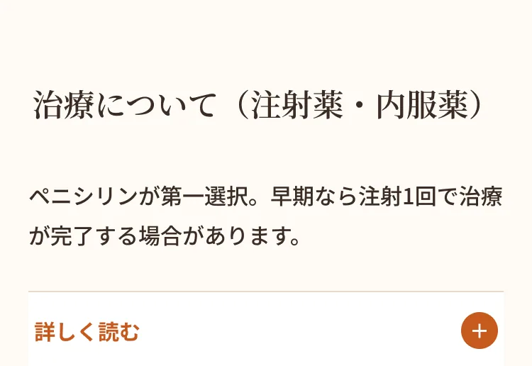
梅毒は病期にかかわらず、ペニシリンが第一選択薬です。当院では、筋肉注射（ステルイズ 240万単位）による治療に対応しており、早期梅毒では単回の注射で治療が完了する場合があります（後期梅毒では週1回・計3回）。注射のほか、内服（サワシリン＋ベネシッドを一定期間）での治療もあります。治療後は確認検査で治癒を判定し、治癒が確認できるまで性行為は控えることが大切です。ペニシリンアレルギーの方は別の薬で対応しますので、ご相談ください。
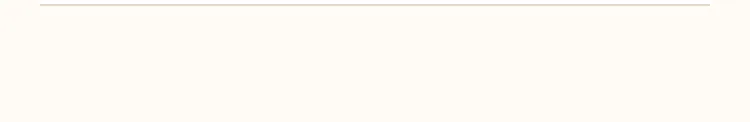
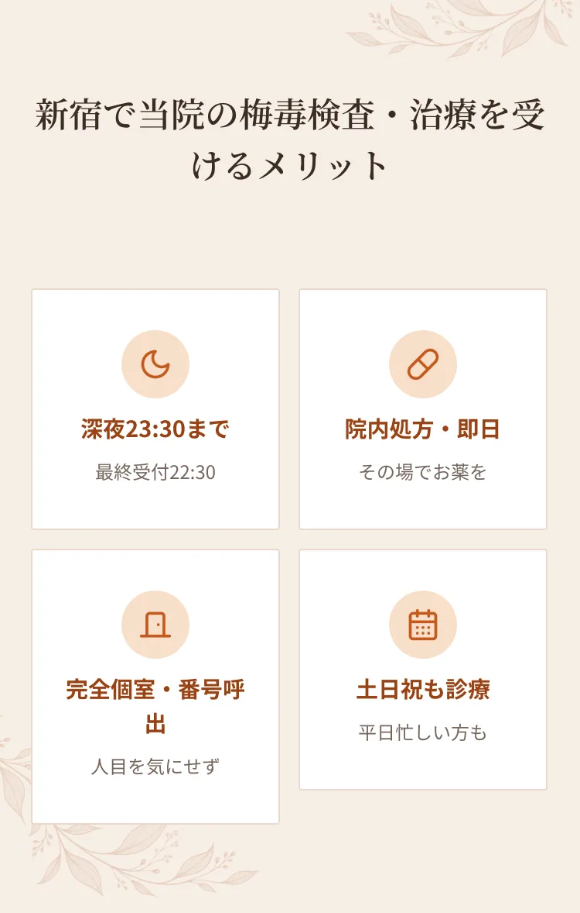
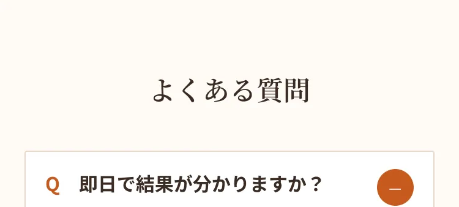
A.即日検査に対応しています。陽性の場合は数日かかる確認検査を行います。
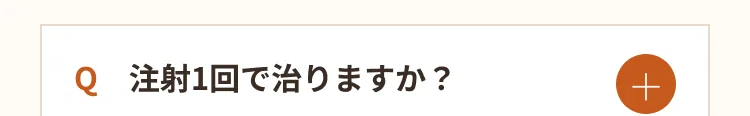
A.早期梅毒では単回の注射で治療が完了する場合があります。病期により回数が異なります。
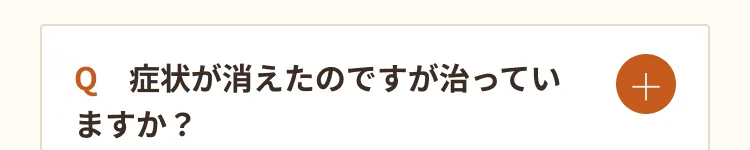
A.症状が消えても菌が残っていることがあります。検査・治療が必要です。
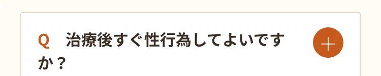
A.確認検査で治癒が確認できるまで控えることが大切です。

A.深夜23:30まで（最終受付22:30）対応しています。